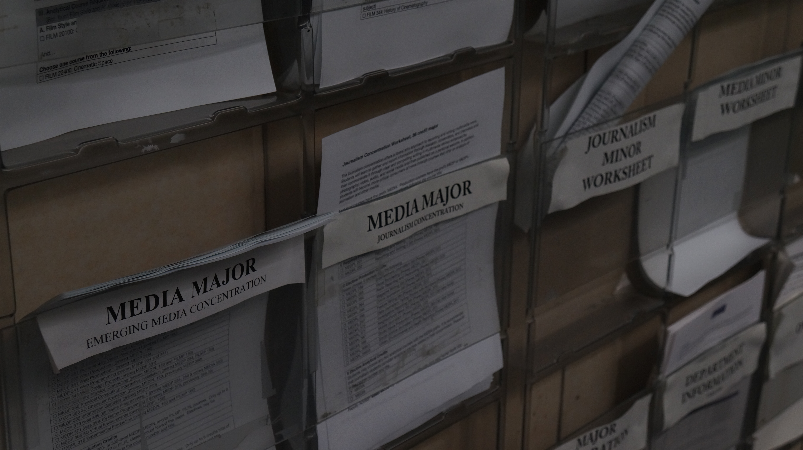

city outside the bridge

city outside the bridge edited

city outside the bridge
city outside the bridge edited
This picture depicts the scenery outside the skybridge that leads to the library + East Building. I chose this image as it's a scenery that is nostalgic to me. It reminds me of the late classes I would take in my sophomore year and the time I would take to glance at this scenery at night before I went home. The school would be empty and serene, which is very different from how it is usually. The scenery would be decorated with blinding lights from the cars and the Empire State Building. In this image, you can see the reflection from the glass showing some aspects of the hallway but mostly showing a reflection of the school on the right side of the image. The image doesn't have this in focus as I wanted it to be kind of like taking a breath of air during a busy day. Looking out the window and seeing this beautiful view, giving yourself space to just breathe. In my edited image, you can see the reflection from the glass showing some aspects of the hallway, but mostly showing a reflection of the school on the right side of the image. The image doesn't have this in focus as I wanted it to be kind of like taking a breath of air during a busy day. Looking out the window and seeing this beautiful view, giving yourself space to just breathe. Given this, in my edits, I made the image brighter so that the colors stood out more. I also adjusted the cyan colors to make them softer and increased the blue-red hue such that the brick building and sky would stand out. Since I wanted the building and sky to stand out, I made sure not to adjusted the yellow-green hue so that the school building that is reflected in the window doesn't really pop out unless you are focused on the image. I wanted the scenery to draw viewers attention + make them smile.
files on a wall

files on the wall edited

This image depicts the files on the wall outside of our lab. I find that there is something nostalgic about having files nailed to the wall with papers containing information on them. The practice of hanging things with important information on the wall has always been something that has caught my eye. Maybe it's because I have also been in a school that does this or maybe it's the nature of a school to do this? I am always reminded of my elementary school when I see files since I would sometimes bring my teacher's attendance sheet to her file for her. Files = school to me. I wanted this picture to focus on the middle file, so I tried my best to have it in focus. I also love how the diagonal of the files naturally draws your eyes to the middle and allows you to seamlessly look along the diagonal. In the edited image, I wanted this picture to focus on the middle file so I tried my best to have it in focus. I also love how the diagnol of the files naturally draws your eyes to the middle and allows you to seamlessly look along the diagnol. The main edits that I made to this image was to make it brighter since the original image was very dark. I also wanted to create some contrast such that words on the papers stood out since my original picture was quite blurry. I also tried to make the colors as even as possible and I dulled the yellow color of the walls to do this.
Reading reflection on “In Plato’s Cave” chapter 1 from On Photography by Susan Sontag, 1977